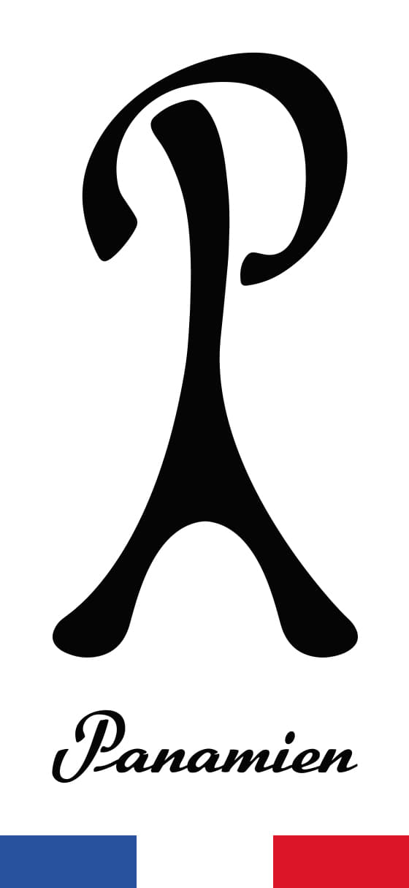
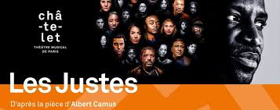

26 years old French dude, I was born in Paris and I grew up in Normandy. I am in love with fashion, interior design, dance, travelling, reading and writing. Curious, altruistic, hard worker and kinda smart, I would love to be involved in a job that requires my vision and in this way be part of the change the world needs.
Click here to discover one of my favorite clothing labelParis is my business. I love this city. More, I vow a cult to the City of Light, and I am convinced that as the capital of fashion, Lutetia could be the spearhead of a fashion revolution calling for deconsumerism and slow fashion. In this sense, I imagined and registered a label.
I like to nourish myself with different arts, such as literature, painting, music, cinema, dance, in order to immerse myself with the world around and be inspired by others. The musical tragedy "Les Justes", directed by Abd Al Malik, based on an original work from Albert Camus, is the work that inspired me the most last year.
I love reading so I love writing. I am also in love with music. I mixed these two hobbies in one : the rap music.
Click here to listen my first recorded rap song